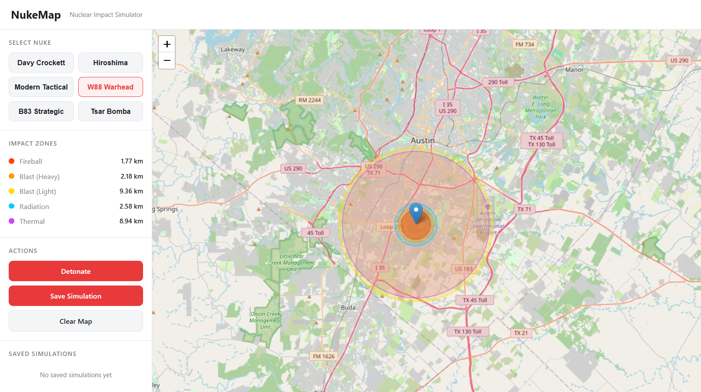

StudyAI
Hackathon Project, April 2026 | Next.js, React, Node.js, Groq (LLaMA 3.3 70B)
- Built a full-stack web app that converts pasted study notes into AI-generated study material.
- Engineered a Node.js API route that integrates Groq's LLaMA 3.3 70B model to generate a concise summary and 12 question-and-answer flashcards per submission.
- Added document-parsing support for PDF and Office file uploads using the pdf-parse and office-text-extractor libraries.
Nuke-Map
Group Project, Modern Web Technologies Course, April 2026 | Node.js, Express, Leaflet.js, MySQL

- Collaborated with a 5-person team to build a full-stack web app that visualizes the effects of a nuclear detonation at any location worldwide using the Leaflet.js mapping library.
- Implemented the core blast-radius calculation engine, modeling fireball, blast-overpressure, thermal-radiation, and initial-radiation zones with yield-scaling formulas and rendering them as interactive map overlays.
- Designed RESTful API endpoints backed by a MySQL database to persist and retrieve simulation data, including location, coordinates, and warhead yield.
Personal Finance Tracker
Java, JavaFX
- Developed a desktop application with Java and JavaFX for logging income and expenses, organizing transactions by category, and tracking spending against monthly budgets.
- Built the UI with JavaFX layouts and controls, including table views, forms, and charts for entering transactions and visualizing spending by category and month.
Custom Language Compiler
C, Lex, Yacc
- Built the front end of a compiler for a custom programming language in C, using Lex to break source code into tokens and Yacc to parse it.
- Built a syntax tree from the parsed code so later stages could analyze the program's structure.
- Wrote the semantic analysis pass: kept track of declared variables and where they're in scope, and reported errors for [undeclared variables, duplicate declarations, and type mismatches].